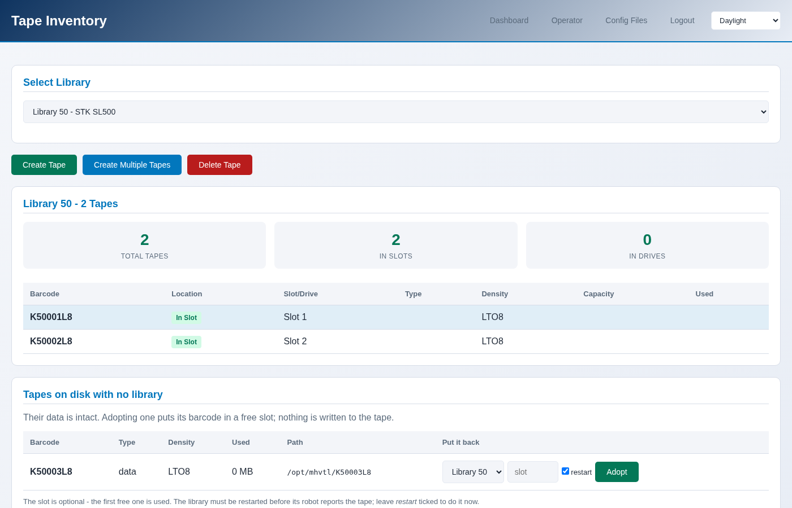

Adopting a tape that is already on disk
A tape’s data outlives the library that held it. Removing a library leaves
its cartridges under /opt/mhvtl, and adopting one puts it into a
library again, with everything that was written to it.
When this comes up
A library was removed without
--remove-media- the usual case.A library was rebuilt, because MHVTL reads its vendor and model once and changing them means recreating it.
Tape files were copied from another host.
Finding them
$ sudo mhvtl library orphans
Tapes on disk no library lists (data kept):
BARCODE PATH
-------- -------------------
K50005L8 /opt/mhvtl/K50005L8
Put one back with: mhvtl tape adopt <library> <barcode>
Orphaned tapes are listed apart from everything else the console considers orphaned, and are never cleaned up automatically. They are data.
Adopting one
Tapes → Inventory, then Adopt, or on the operator’s tape pages. The list offers the tapes on disk that no library lists, and the libraries whose drives can read that generation.
{kind=link}

$ sudo mhvtl tape adopt 50 K50005L8
K50005L8 is now in slot 5 of library 50, with its data
Restart the library for its robot to see this: mhvtl service restart --library 50
$ sudo mhvtl tape adopt 50 K50005L8 --slot 4
What it does, and what it does not
It adds the cartridge to library_contents.50 and leaves its files exactly
where they are. Nothing is copied, nothing is rewritten, and the data is not
read.
The library must have a free slot, and its drives must take that generation - an LTO-8 cartridge cannot be adopted into a library of AIT drives, because nothing there could ever load it.
Restart the library afterwards
MHVTL reads library_contents once, when the library starts, so its robot
does not see the adopted tape until it restarts:
$ sudo mhvtl service restart --library 50
Both the console and the command line say this after an adopt, and the library page flags a library whose configuration and robot disagree.
Checking the data survived
Mount it and ask the drive:
$ sudo mhvtl op mount 50 3 0
$ sudo mhvtl status activity 50
DRIVE STATE BARCODE COUNTERS
----- ------- -------- ------------------------------------------
51 holding K50001L8 363.0 MB written - 75.7% of the tape
A tape that kept its data reports what was written to it. One that lost its
files reports an empty cartridge - and mhvtl tape list would have said
ON DISK: no before you mounted it.